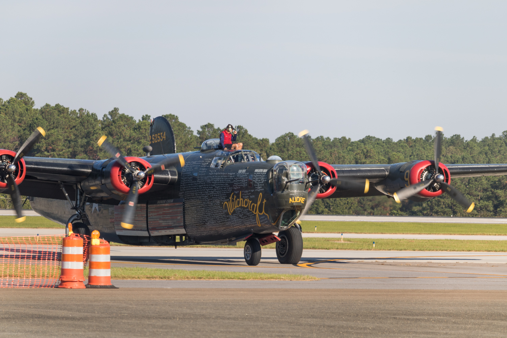
A B-24 Liberator landing at Raleigh-Durham airport
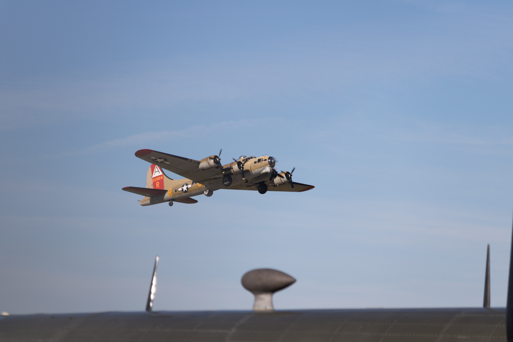
A B-17 Flying Fortress having just taken off
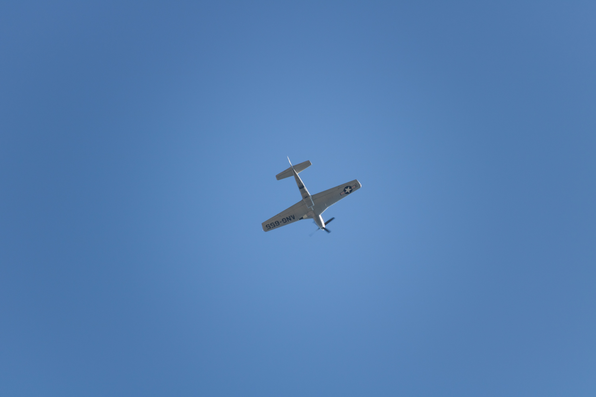
P-51 Mustang flying directly overhead
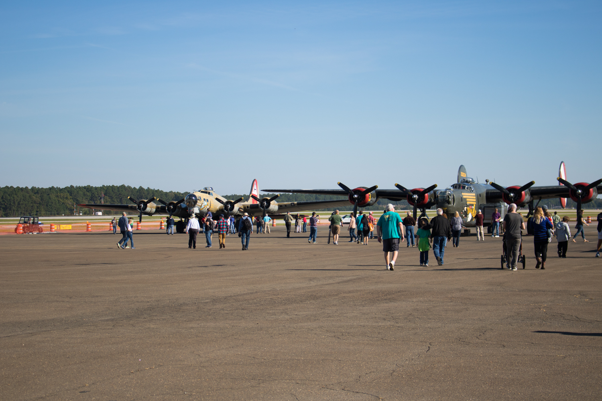
The tarmac with the B-17 and B-24 lying in wait
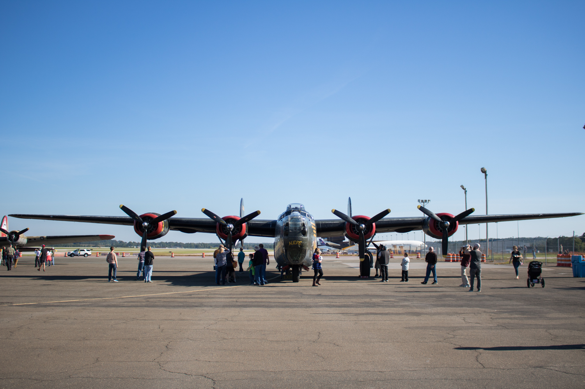
A wide shot of the B-24 Liberator on the tarmac
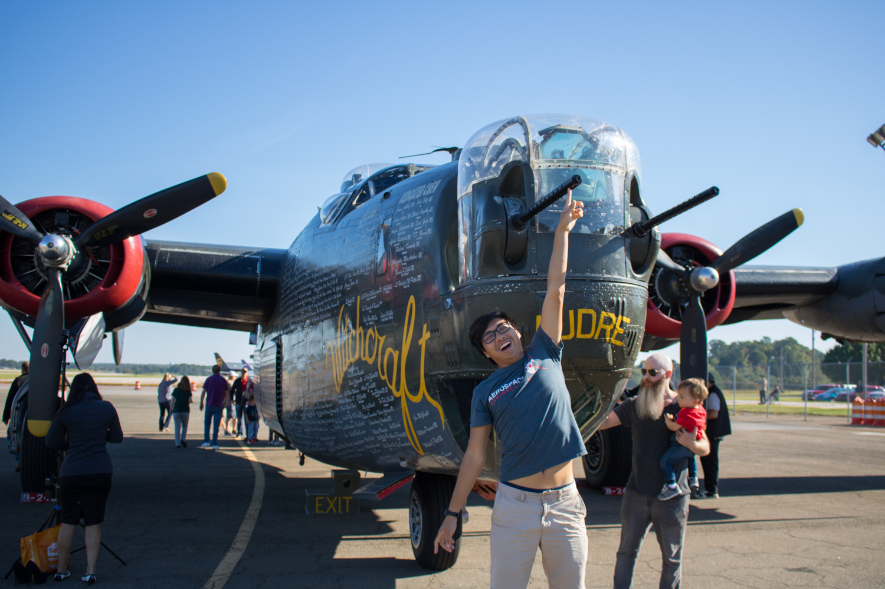
Alex Chen touching the tip of the B-24's nose guns
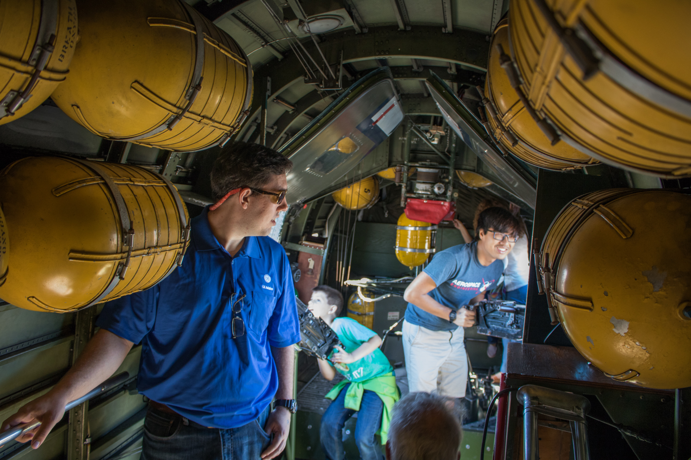
The interior of the B-24 Liberator, with Alex on the waist gun and Kenny by the tanks
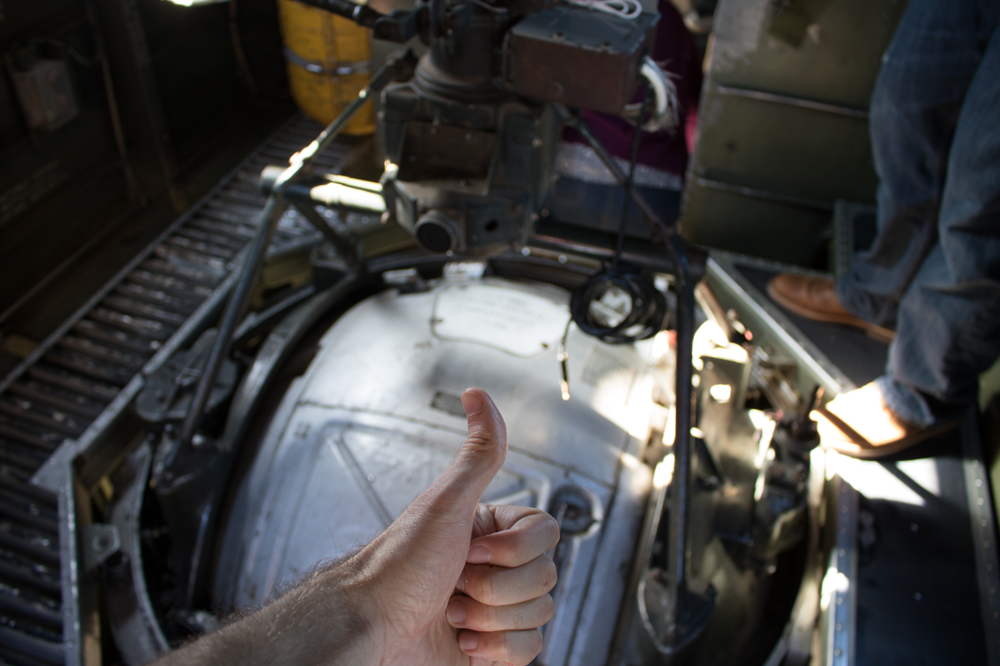
Checking that camera focus in front of the ball turret
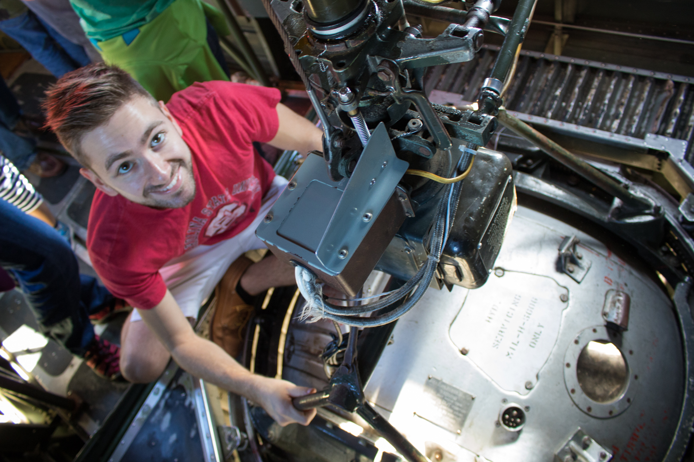
Myself standing on top of the entrance to the ball turret
Kenny standing in the bomb bay of the B-24
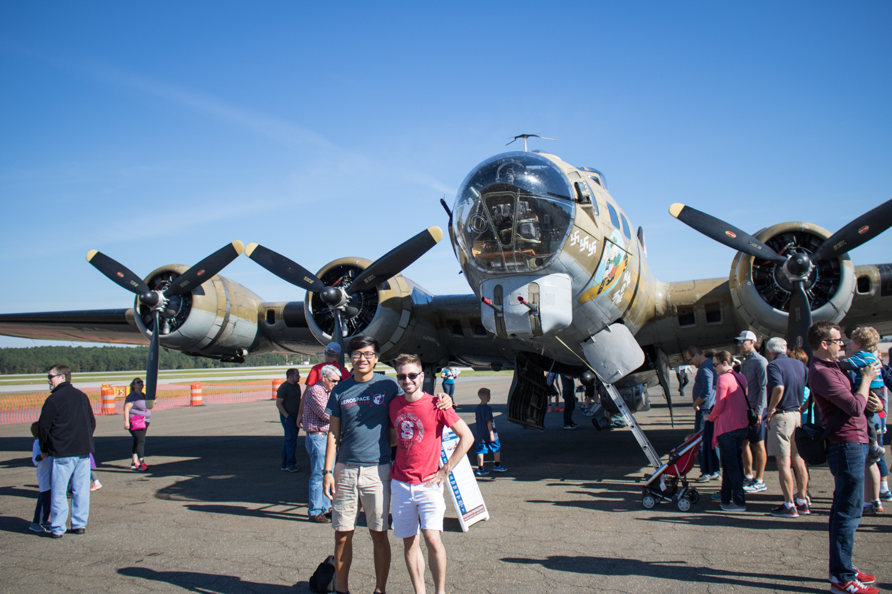
Alex and I in front of the B-17 Flying Fortress
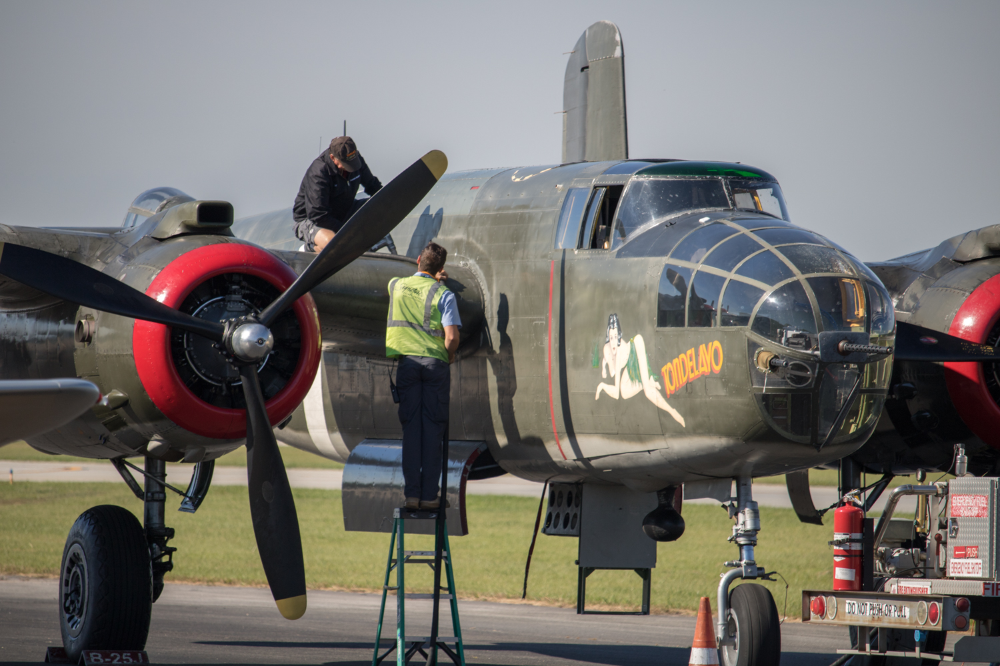
A close up shot of the B-25 Mitchell, the only military aircraft to be named after a person
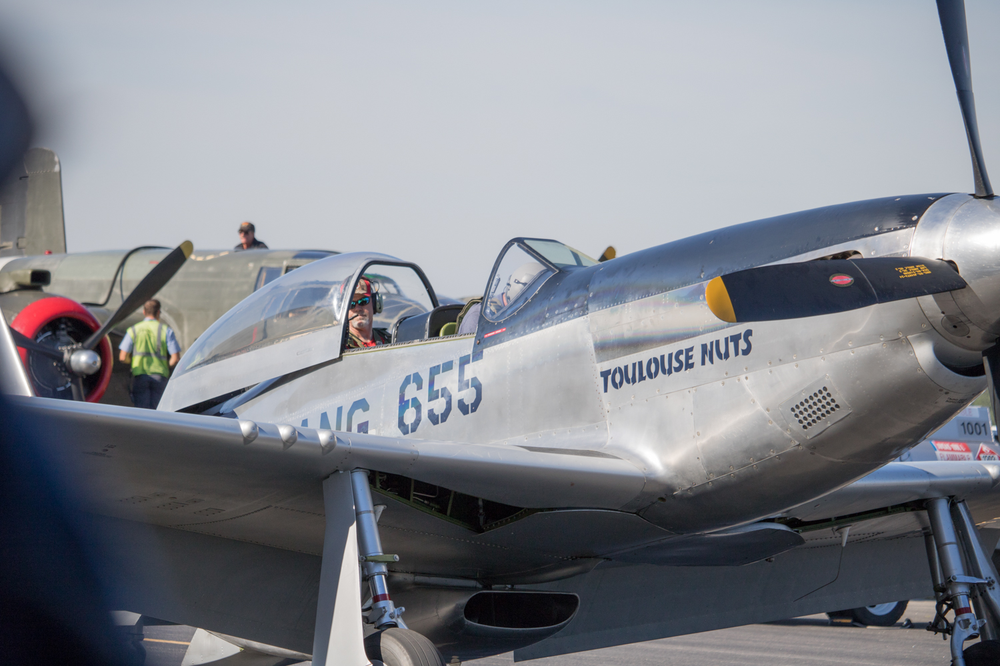
A close up of the P-51 Mustang
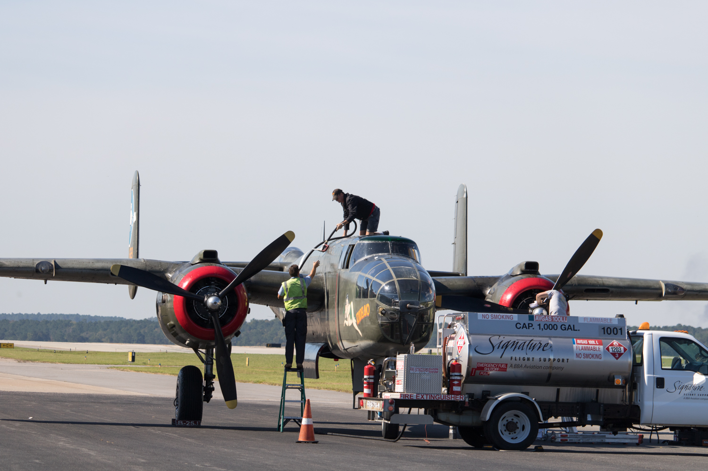
Another shot of the B-25 Mitchell on the deck
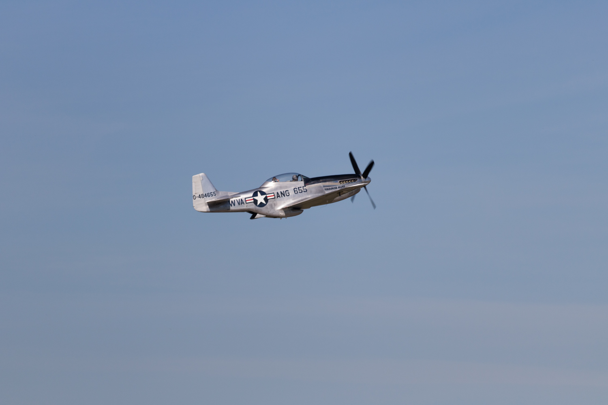
The P-51 sailing off and away into the sky